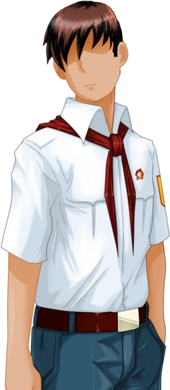
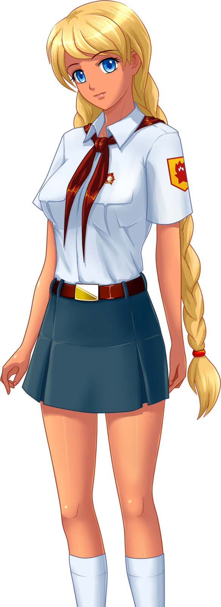
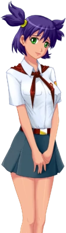
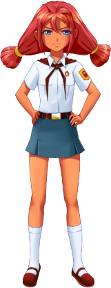
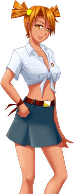
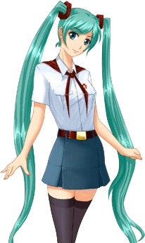

Бесконечное лето – это визуальная новелла от российских разработчиков, дарящая самые искренние и светлые переживания об ушедших днях и надеждах, которым ещё предстоит сбыться.
Встретив на улице Семена, главного героя игры, вы бы никогда не обратили на него внимания – действительно, подобных людей в каждом городе тысячи и даже сотни тысяч. Но однажды с ним приключается совершенно необычное происшествие: он засыпает зимой в автобусе, а просыпается... посреди жаркого лета. Перед ним – пионерлагерь «Совенок», а позади – прошлая жизнь. Чтобы разгадать, что же с ним случилось, Семену придется получше узнать местных обитателей (а может, даже встретить любовь), разобраться в лабиринтах сложных человеческих взаимоотношений и своих собственных проблемах, решить загадки лагеря. И главное – как вернуться обратно или не возвращаться вовсе?
Главный герой - Семён. Обычный "домашний сыч", и обитатель 2ch. Его жизнь пуста и бессмысленна, день сменяется днём, но никаких изменений нет, да и сам Семён не рвётся что-либо менять. Однако, в один зимний вечер, он был приглашён на встречу товарищей по университету, и под предлогом того, что всё же было бы неплохо повидать старых друзей, он направляется на автобусную остановку, где садится на автобус под номером 410. Под гулкий звук мотора, и виды вечернего города, Семён засыпает. Отойдя ото сна и открыв глаза, Семён понимает что что-то не так, что-то изменилось, и выйдя из автобуса понимает, что очутился в самом настоящем лете, напротив ворот пионерлагеря с названием "Совёнок"...
Внешность Слави соответствует её имени — красивая голубоглазая девушка с золотистыми волосами, заплетёнными в две длинных косы. Добрая, ответственная, фактически исполняет роль помощницы вожатой. Пользуется доверием работников лагеря, иногда в своих целях. Однако, спорное окончание рута, сцена в лесу после карточного турнира и инициатива, проявляемая в любовной сцене, даёт повод сомневаться в её искренности. Раскованна, часто не испытывает стеснения или стыда перед главным героем. Любит вышивать и вязать. Любит плавание, причём, порой занимается им в ночное время суток. Семёну говорит, что любит природу, и хочет быть краеведом..
Лена — девушка среднего роста с тёмно-фиолетовыми волосами, собранными в два торчащих в разные стороны хвоста. Главный герой при первой встрече описывает Лену так: «На её красивом лице, как мне показалось, муки за судьбы всего человечества смешались с прямо-таки вселенской грустью.» Асоциальна, крайне застенчива. Любит читать книги и сторонится быть в центре внимания. При всём этом, в определенных ситуациях ведёт себя уверенно и хладнокровно. Влюблена в главного героя, отчего при встречах с ним застенчивость Лены проявляется сильнее. Но узнав Семёна получше, Лена может разговаривать с ним достаточно свободно (и порой даже очень экспрессивно).
Ульяна — девушка с красными волосами, собранными в два толстых хвоста. Весёлая, непоседливая, из-за детской непосредственности не всегда осознаёт последствия своих действий. За своё поведение ей часто попадает от вожатой, однако это не останавливает её от идеи совершить какую-нибудь новую пакость. Основная "жертва" Ульяны - это Лена, ведь даже при первом знакомстве с ней, она бегала за Леной размахивая жуком, однако, после появления в лагере Семёна, частенько начала издеваться и над ним.
Алиса — девушка среднего роста с ярко-рыжими волосами, завязанными в два коротких хвоста, и очень выразительными янтарными глазами. Поначалу характеризуется главным героем как неисправимая хулиганка из-за её страсти к разнообразным пакостям и нежелания следовать правилам лагеря. Но оказывается, что это, по сути, маска, и вне этого образа Алиса добра, боязлива и наивна, а также стеснительна и неопытна в любви. Любит игру на гитаре, но никогда не была замечена за игрой на публике. Любит плавание. Сильно раздражается, когда кто-то называет её "ДваЧе". Алиса — человек, который не будет связываться с любым встречным, так как имеет твёрдые принципы относительно людей, поэтому достаточно тяжело получить её расположение.
Мику — девушка красивой внешности с одной отличительной особенностью — очень длинными циановыми волосами, завязанными в два хвоста, доходящими ей до колен. Очень жизнерадостна и позитивна, но чересчур болтлива, чем быстро утомляет окружающих. По своей натуре Мику не обдумывает действия - может ляпнуть чего не следовало, или сказать что-либо в неподходящий момент.
